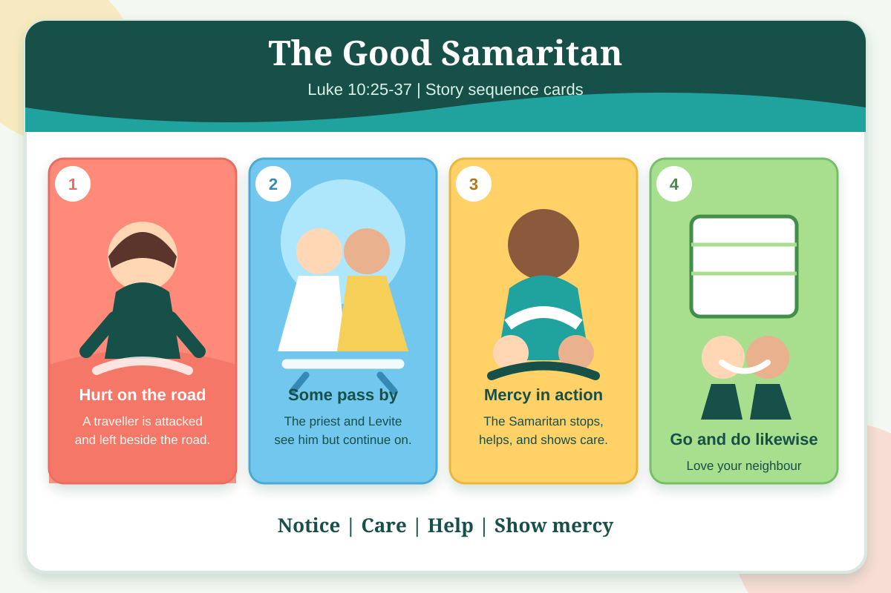

Professional Teaching Portfolio
CRE: The Good Samaritan
A reflective collection of planning, teaching resources, learner assessment, and professional practice.
Home · Biography
Professional profile and portfolio introduction
Purpose of this section: Introduce the teacher, professional values, and the evidence presented in this portfolio.
Kakenya Lucy
CRE Student · Aspiring CRE Teacher
Professional biography
My name is Lucy, and I am a student pursuing Christian Religious Education (CRE). I have a passion for learning about God, the Bible, and Christian values. Through CRE, I aim to grow spiritually, morally, and academically.
Teaching philosophy
I believe in love, honesty, kindness, respect, and forgiveness. My dream is to become a qualified CRE teacher who inspires learners, teaches good morals, and helps others understand God’s word. My goal is to make a positive difference in society through Christian teachings.
About this portfolio
This portfolio documents a learning sequence on Jesus’ parable of the Good Samaritan. It brings together curriculum planning, a lesson plan, teaching materials, learner evidence, and a record of work.
Teacher reflection: My strengths are a passion for Christian Religious Education, respect for others, and a desire to help learners develop good morals. My goal is to become a qualified CRE teacher who explains Christian teaching clearly and supports every learner. This portfolio shows my growth in planning, teaching, assessment, and reflection.
Syllabus
Curriculum focus and intended learning outcomes
Purpose of this section: Show how this learning sequence connects to the relevant CRE curriculum. Adapt the curriculum reference to the school’s approved syllabus.
TOPIC FOCUS
The Good Samaritan · Luke 10:25–37
Strand / theme: Jesus’ teaching and Christian living · Sub-topic: Love of neighbour and compassion · Class / level: Grade 10 · School: Moi Girls Eldoret · Curriculum / syllabus edition: School-approved CRE syllabus, 2026
Learning outcomes
By the end of the learning sequence, learners should be able to:
- Retell the parable of the Good Samaritan in the correct sequence.
- Identify the characters and describe the choices each character made.
- Explain who is a neighbour, drawing on Jesus’ response in Luke 10:25–37.
- Relate compassion and practical help to situations in their community.
- Demonstrate respectful listening and cooperation during discussion and group work.
Key competencies
Communication and collaboration · critical thinking · empathy and responsible citizenship · reflection.
Values and attitudes
Compassion · respect · inclusion · kindness · willingness to help people in need.
Teacher reflection: The priority outcomes were understanding Jesus’ teaching, identifying compassion in action, and applying the message to daily life. Reading aloud, sequence cards, role-play, discussion, and written or oral responses provide different ways for learners to participate.
Schemes of Work
A short sequence for teaching and learning
Purpose of this section: Map the topic across lessons so that learning builds from familiarity with the story to personal application.
School: Moi Girls Eldoret · Term: Term 1 · Class: Grade 10 · Week range: Weeks 1–3 · Teacher: Kakenya Lucy
| Week | Lesson | Topic / content | Objectives | Activities | Resources | Assessment |
|---|---|---|---|---|---|---|
| Week 1 | 1 | Setting and characters · Luke 10:25–30 | Identify the context, characters, and opening events. | Read aloud; sequence opening events; predict what may happen next. | Bible / printed passage; story sequence cards. | Oral questions; sequence check. |
| Week 2 | 2 | The choices made on the road · Luke 10:31–35 | Compare the responses of the priest, Levite, and Samaritan. | Small-group role-play; discuss motives and actions. | Role cards; board; illustration. | Group explanation; observation checklist. |
| Week 3 | 3 | Who is my neighbour? · Luke 10:36–37 | Explain Jesus’ teaching and apply it to a familiar situation. | Think-pair-share; case study; write one practical response. | Case-study cards; learner notebooks. | Exit ticket; written response. |
The three-lesson sequence is planned for three consecutive weeks and can be adjusted to the approved school timetable.
Teacher reflection: The sequence moves from understanding the story to comparing choices and applying the message. Additional time can be given to reading support, role-play, or the practical application task where learners need it.
Lesson Plan
CRE · The Good Samaritan · Luke 10:25–37
Purpose of this section: Provide a teachable lesson structure with clear learning intentions, learner participation, and checks for understanding.
Lesson details
School: Moi Girls Eldoret · Date: 2026 · Class: Grade 10 · Duration: 40 minutes · Strand: Jesus’ teaching and Christian living
Learning objectives
By the end of the lesson, learners can retell the parable, compare the characters’ responses, and state one practical way to show compassion.
Prior knowledge
Learners have encountered stories about Jesus and can share examples of kindness or helping others. Invite varied experiences without requiring personal disclosure.
Materials
Bible or printed passage; character / sequence cards; board and markers; short scenario cards; learner notebooks; exit tickets.
Teaching and learning sequence
| Stage / time | Teacher actions | Learner actions | Assessment for learning |
|---|---|---|---|
| Introduction · 5 min | Welcome learners. Present a familiar, age-appropriate scenario about someone needing help. Ask: “What could a caring person do?” State the lesson focus. | Think quietly, then share ideas with a partner or class. | Listen for examples of helpful actions; note prior understanding. |
| Read and understand · 10 min | Read Luke 10:25–37 aloud or invite supported reading. Clarify unfamiliar words and check story sequence. | Follow the passage; identify the characters and arrange story cards. | Ask learners to retell one event in sequence. |
| Explore and discuss · 12 min | Guide groups to compare the priest’s, Levite’s, and Samaritan’s choices. Ask what the Samaritan did to help. | Discuss using character cards; share evidence from the passage. | Use a simple checklist for participation, sequence, and explanation. |
| Apply learning · 8 min | Give groups a short everyday scenario. Prompt them to suggest a safe, respectful, practical response. | Agree on a response and explain how it shows compassion. | Listen for a relevant action and reason; offer prompts where needed. |
| Conclusion · 5 min | Return to the question “Who is my neighbour?” Summarise the message and issue an exit ticket. | Share one learning point and complete: “I can show compassion by…” | Review exit tickets to plan reteaching or extension. |
Differentiation and inclusion
Offer read-aloud support, visuals, paired rehearsal, and sentence starters. Allow oral, drawn, or written responses. Invite extension learners to compare the characters’ choices using evidence from the passage.
Assessment criteria
- Accurately identifies key characters and events.
- Explains the Samaritan’s response with a relevant detail.
- Connects the teaching to one practical action.
Post-lesson reflection: Learners should understand the sequence of the parable, the Samaritan’s practical care, and the meaning of being a neighbour. Sequence responses, group explanations, and exit tickets provide evidence. Next time, I will allow extra rehearsal time for learners who need reading or speaking support and extend confident learners with a comparison of the characters’ choices.
Teaching Guide / Lesson Video
Practical delivery notes and media placeholder
Purpose of this section: Support consistent lesson delivery and provide a place to share a short teaching demonstration or lesson recording.
Teaching guide
- Prepare the passage, visual sequence cards, and accessible scenario prompts.
- Establish a respectful discussion agreement; do not ask learners to disclose sensitive experiences.
- Read the parable with pauses for prediction, vocabulary, and comprehension checks.
- Use open questions: “What did the Samaritan do?” and “How did his actions help?”
- Close with an individual reflection and use responses to plan the next lesson.
Lesson video
Video: “CRE The Samaritan Class Video Presentation by Madam Lucy Kakenya.” Use it as an audio-visual presentation of the CRE topic, then invite learners to identify the story’s characters, choices, and message.
If the player is unavailable, watch the lesson video on YouTube.
How the video supports learning: The class presentation gives learners another way to engage with the Samaritan topic and revisit its key ideas. Follow viewing with discussion or a short recall task. Check captions and provide an alternative summary where needed.
Teacher reflection: The presentation supports learning by combining explanation with an audio-visual reminder of the topic. I will improve the lesson by pausing at key moments for prediction, vocabulary checks, and learner questions.
Lesson Notes
Learner-friendly summary · The Good Samaritan
Purpose of this section: Give learners a clear reference for the story, its key message, and the lesson’s vocabulary.
Key Bible reference: Luke 10:25–37. Read the passage in a Bible or the approved class text.
The story in brief
Jesus tells of a man travelling from Jerusalem to Jericho who is attacked and left hurt beside the road. A priest and then a Levite see him but pass by. A Samaritan stops, cares for his injuries, takes him to an inn, and arranges for his care. Jesus asks which traveller acted as a neighbour. The answer is the one who showed mercy.
“Go and do likewise.” — Luke 10:37 (check wording in the Bible translation used in class)
Main ideas
- A neighbour is someone we can treat with care and respect.
- Compassion is shown through helpful action, not only kind words.
- We should not let prejudice or difference stop us from helping.
Moral lessons
- Notice when another person needs help.
- Respond with kindness, dignity, and practical care.
- Where a situation is unsafe, seek help from a trusted adult or appropriate service.
Key words
Neighbour: a person we are called to treat with care. Compassion: concern for someone who is suffering, expressed through care. Mercy: kindness and help offered to someone in need.
Review questions
- Where was the injured man travelling?
- Which people passed by, and who stopped to help?
- Name two things the Samaritan did for the injured man.
- What does this story teach about being a neighbour?
- What is one safe and practical way you could show compassion?
Teacher reflection: Learners can recall the main characters, the Samaritan’s actions, and the instruction to “go and do likewise.” The meaning of compassion and the importance of responding safely may need reinforcement through additional examples and discussion.
Teaching Aid
Visual story-sequence cards
Purpose of this section: Document a teaching resource and explain how it supports learners to understand and discuss the parable.

Aid: Story-sequence and character cards
Description: A set of illustrated or text-based cards showing key events and characters from Luke 10:25–37.
Purpose: Make the sequence visible, support recall, and help learners compare the choices made by the travellers.
How to use: Learners work in pairs to order the event cards, match characters to actions, and explain which action showed mercy.
Accessibility: Use large, high-contrast images with short captions; provide tactile or verbal alternatives as appropriate.
Materials / preparation: Bible or printed passage, card stock, markers, scissors, and learner notebooks. Prepare the cards by writing or drawing the main events and characters from Luke 10:25–37. The resource is teacher-created for the Grade 10 CRE lesson at Moi Girls Eldoret.
Teacher reflection: The cards make the story sequence visible and give learners a concrete way to discuss characters and actions. I would adapt the aid by increasing print size, adding clearer captions, and providing verbal descriptions where needed.
Students’ Performance
Assessment evidence and next steps
Purpose of this section: Summarise learner progress against the lesson objectives and use evidence to plan responsive teaching.
Grade 10 performance record supplied for Moi Girls Eldoret. Follow school policy for consent, confidentiality, and storage of student work.
| Assessment focus | Evidence / measure | Results | Interpretation / next step |
|---|---|---|---|
| Retells key events in sequence | Class assessment record | 20 learners recorded · average 75.1 | Use the lesson sequence cards and read-aloud support to reinforce recall. |
| Explains how the Samaritan showed mercy | Teacher comments and written responses | Grades range from A to C | Strengthen evidence-based explanations for learners below the class average. |
| Applies the lesson to a practical situation | Assignment, project, and teacher comment | 20 learner comments recorded | Extend strong learners and provide sentence starters for developing responses. |
Grade 10 performance record
| No. | Admission no. | Learner name | CAT 1 | CAT 2 | Assignment | Project | Exam | Total / average | Grade | Teacher comment |
|---|---|---|---|---|---|---|---|---|---|---|
| 1 | 6167 | Daniel Wanjala | 72 | 74 | 68 | 80 | 76 | 74 | B | Good understanding of key concepts; continue building evidence-based explanations. |
| 2 | 6168 | Brian Muthoni | 80 | 78 | 82 | 84 | 88 | 82 | A | Strong analytical work and confident historical reasoning. |
| 3 | 6169 | Kevin Kiprotich | 68 | 70 | 72 | 76 | 75 | 72 | B | Consistent participation and improving source-based argumentation. |
| 4 | 6170 | Joseph Kibet | 61 | 65 | 70 | 72 | 68 | 67 | C+ | Shows potential; focus on organising historical evidence clearly. |
| 5 | 6171 | Peter Otieno | 78 | 76 | 81 | 83 | 80 | 80 | A- | Very good explanation of causes and effects in historical contexts. |
| 6 | 6172 | Anthony Karanja | 58 | 62 | 64 | 66 | 70 | 64 | C | Needs stronger use of key dates and supporting evidence in responses. |
| 7 | 6173 | Collins Omondi | 84 | 82 | 86 | 88 | 90 | 86 | A | Excellent historical inquiry and interpretation of sources. |
| 8 | 6174 | Victor Langat | 74 | 72 | 78 | 79 | 77 | 76 | B+ | Good progress; continue expanding your use of accurate historical terminology. |
| 9 | 6175 | Samuel Njuguna | 66 | 69 | 71 | 73 | 74 | 71 | B- | Shows a sound understanding; work on deeper analysis of source reliability. |
| 10 | 6176 | Martin Mwangi | 88 | 86 | 90 | 91 | 93 | 90 | A | Outstanding performance and excellent structured historical writing. |
| 11 | 6177 | Daniel Wanjala | 63 | 67 | 69 | 71 | 72 | 68 | C+ | Strengthen narrative accuracy and support responses with examples. |
| 12 | 6178 | Joseph Kibet | 71 | 73 | 77 | 79 | 78 | 76 | B+ | Steady improvement; keep making evidence-based comparisons. |
| 13 | 6179 | Brian Muthoni | 55 | 60 | 62 | 64 | 67 | 62 | C | More revision and explanation of key concepts will improve performance. |
| 14 | 6180 | Peter Otieno | 81 | 83 | 85 | 84 | 87 | 84 | A- | Strong grasp of chronology and use of relevant historical evidence. |
| 15 | 6181 | Samuel Njuguna | 59 | 61 | 63 | 65 | 69 | 63 | C | Participates reasonably; improve confidence in answering extended questions. |
| 16 | 6182 | Victor Langat | 76 | 74 | 79 | 80 | 82 | 78 | B+ | Good understanding of source interpretation and historical themes. |
| 17 | 6183 | Collins Omondi | 64 | 66 | 68 | 70 | 73 | 68 | C+ | Needs more consistent revision to strengthen comprehension. |
| 18 | 6184 | Martin Mwangi | 87 | 85 | 89 | 90 | 91 | 88 | A | Excellent depth of understanding and high-quality responses. |
| 19 | 6185 | Kevin Kiprotich | 70 | 69 | 73 | 75 | 76 | 73 | B | Good effort; continue refining historical argument and evaluation skills. |
| 20 | 6186 | Anthony Karanja | 75 | 77 | 79 | 82 | 81 | 79 | B+ | Strong performance with good evidence and clear interpretation of events. |
Performance summary
The class average is 75.1 across 20 learners. The highest recorded average is 90 and the lowest is 62. Grade distribution: 4 A, 2 A-, 4 B+, 3 B, 1 B-, 3 C+, and 3 C. Stronger learners should receive extension tasks, while learners below the class average need structured revision and evidence-based response practice.
Sample student work
Anonymised response prompt: “I can show compassion by helping someone who is in need, listening respectfully, and seeking a trusted adult when a situation is unsafe.”
Keep learner names and identifying details out of portfolio copies.
Analysis and teacher reflection: Compare the verified responses with the three lesson objectives. Reteach sequencing or vocabulary where recall is incomplete, model evidence-based explanations where learners need support, and extend confident learners through unfamiliar compassion scenarios.
Records of Work Covered
Teaching record and follow-up notes
Purpose of this section: Maintain a concise, dated record of the curriculum covered, learning activities, and any action needed.
School: Moi Girls Eldoret · Class: Grade 10 · Term: Term 1 · Teacher: Kakenya Lucy
| Date | Topic / content covered | Activities / resources used | Teacher remarks / follow-up |
|---|---|---|---|
| [DD/MM/YYYY] | Introduction and characters · Luke 10:25–30 | [Reading, discussion, sequence cards] | [Coverage, learner response, next step] |
| [DD/MM/YYYY] | Choices and compassion · Luke 10:31–35 | [Role-play, character cards] | [Coverage, learner response, next step] |
| [DD/MM/YYYY] | Who is my neighbour? · Luke 10:36–37 | [Scenario discussion, exit ticket] | [Coverage, learner response, next step] |
| [DD/MM/YYYY] | [Additional topic / revision] | [Activities and resources] | [Remarks / follow-up] |
Teacher reflection: [At the end of the sequence, record what was completed, any content carried forward, and the next planned learning.]